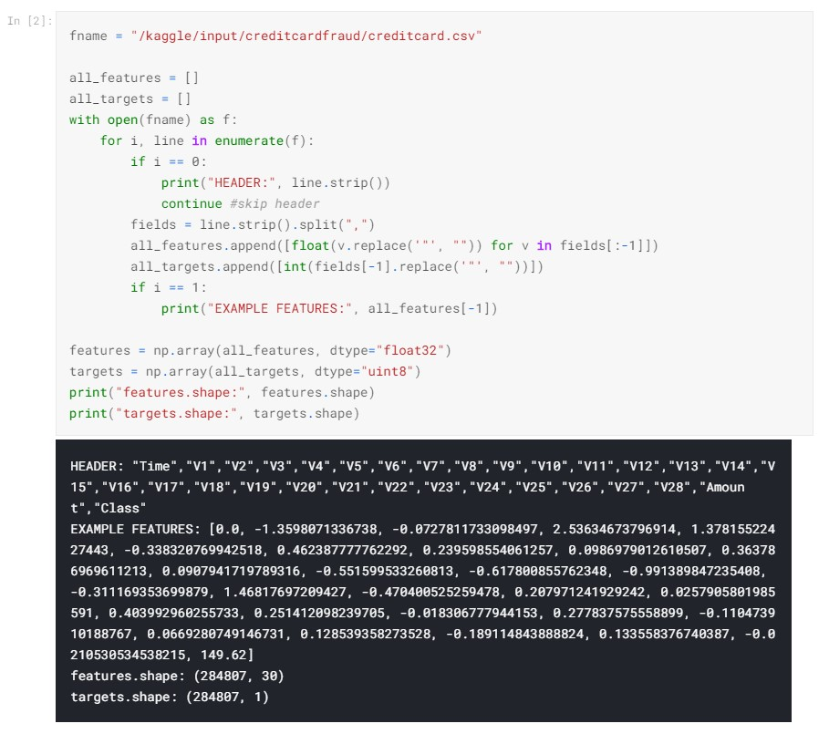
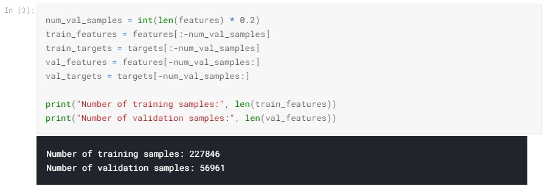
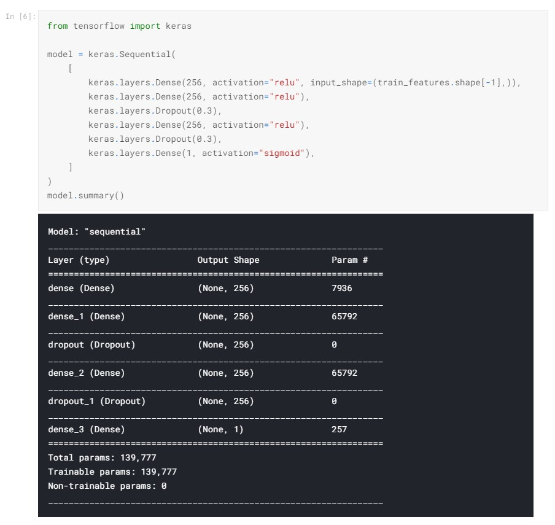
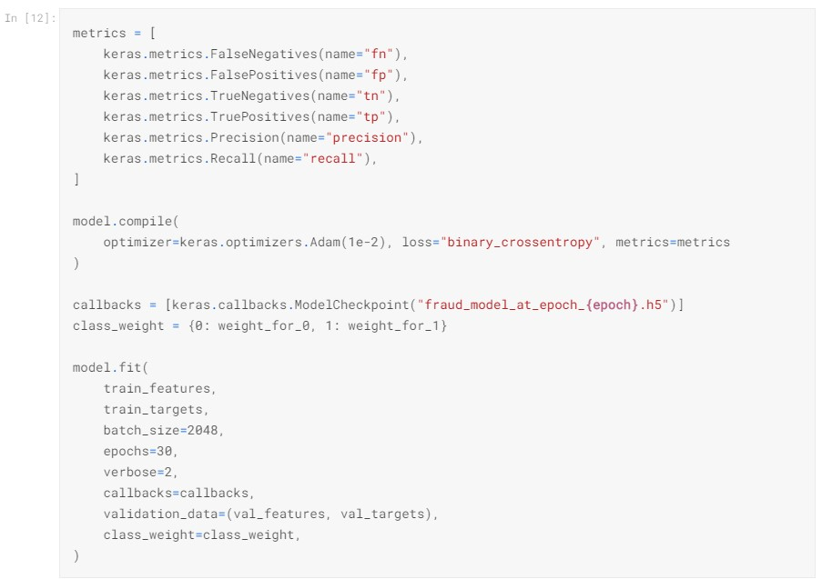
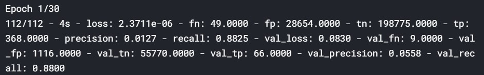
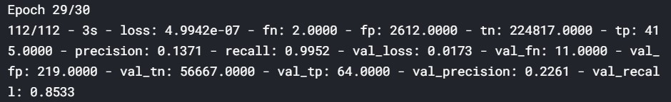

Overview
It is important that credit card companies are able to recognize fraudulent credit card transactions so that customers are not charged for items that they did not purchase. Cyber security is more important now more than ever. Now a days, people have their entire wallet on their mobile phone along with other important data that could be to harm you or others. Is it possible for companies to help prevent false transactions before they happen? With the help of machine learning, companies have been able to stop most suspicious transactions from taking place.
The dataset contains transactions made by credit cards in September 2013 by European cardholders. This dataset presents transactions that occurred in two days, where we have 492 frauds out of 284,807 transactions. The dataset is highly unbalanced, the positive class (frauds) account for 0.172% of all transactions.
It contains only numerical input variables which are the result of a PCA transformation. Unfortunately, due to confidentiality issues, we cannot provide the original features and more background information about the data. Features V1, V2, … V28 are the principal components obtained with PCA, the only features which have not been transformed with PCA are 'Time' and 'Amount'. Feature 'Time' contains the seconds elapsed between each transaction and the first transaction in the dataset. The feature 'Amount' is the transaction Amount, this feature can be used for example-dependent cost-sensitive learning. Feature 'Class' is the response variable and it takes value 1 in case of fraud and 0 otherwise.
Process
This project will be a walk-through of a Keras neural network. This data is highly imbalanced, meaning that between the categories of fraudulent and not fraudulent, more than 99% of the data is not fraudulent.
This data is all numerical and since the features are all unknown, there is no real cleaning to be done. Since no cleaning is needed and no real feature selections, I just needed create a training and validation set. I will not be using Pandas to create a DataFrame, instead I am going to vectorize the given CSV file.
Preparing the validation set is very straight forward and below is the syntax I used.
Next, I tried my best to normalize the data with some simple statistical methods. I used the Numpy library to gather the mean and standard deviation of the training and validation sets. Once that was taken care of, I started to build the layers to my neural network. I made this model using sequential layers, utilizing Dense and Dropout. Below is the architecture of the network.
Once the model has been defined, I compiled and fit the model to see the results of the model. I defined some metrics to look for to be part of the model's optimizer. I defined callbacks and then fit the model. After running it, I could see all the results after each epoch runs and compare to see how well the model is performing.
  From the results, it looks like 415 out of the 417 fraudulent charges were identified. The model also detected over 2,000 charges that were not fraudulent. This is probably to many false positives to apply into actual application. This model would probably need more adjusting, and a more in depth dive into each feature would probably help find the problem where the model is off. But in the end, it is better to be safe than sorry when it comes to other people's money.
Data Source by Kaggle Credit Card Fraud Detection Competition.